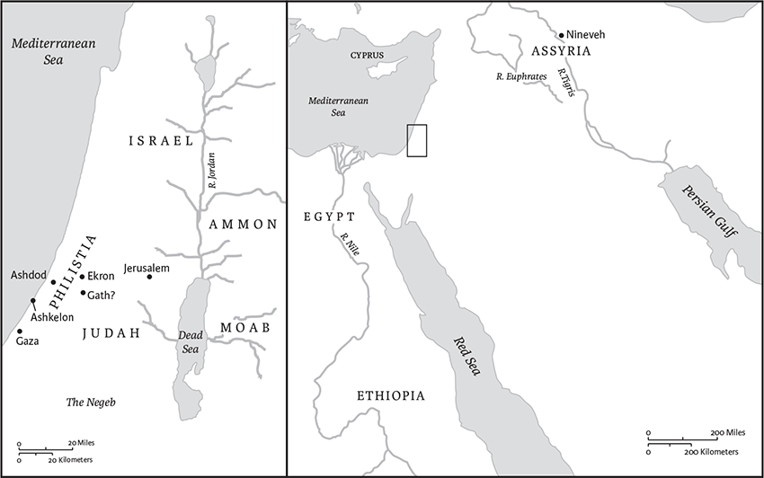

Zephaniah
Name, Canonical Location, and Date of Composition
Zephaniah is the ninth of the twelve Minor Prophets in both the Masoretic Text (MT) and the Septuagint (LXX). Its superscription provides more detailed information than do those of Nahum and Habakkuk, the two books that precede it in the canon.
The superscription's four-generation genealogy links the prophet (whose name means “the Lord has hidden” or “the Lord has stored up”) with the reign of the Judean king Josiah (640–609 bce). Second Kings 22–23 lauds Josiah as one of Judah's great religious reformers; before his death in 609 bce, he removed foreign images from the Temple in Jerusalem, centralized worship practices, and established for Judah a degree of political independence from the Assyrian Empire. Resonating strongly with this narrative, Zephaniah blames Judeans for mixing worship of the Lord with the worship of other deities (1.4–5) and accuses the royal court of dressing in foreign attire (1.8–9).
While the literary setting of the book in the seventh century bce is obvious, the book may actually have been composed or at least substantially edited at a later date. The concluding promise of salvation for “daughter Jerusalem” (3.14–20), for example, reflects an exilic or postexilic perspective in its concern with the return of exiles to the city.
Contents and Interpretation
Much of Zephaniah mirrors other prophetic books. It opens with a dramatic announcement of “the day of the Lord,” a time in which God will act decisively to (re-)establish justice (Joel 1.15; 3.14; Am 5.18; Ob 15; Zech 12.4). It pairs oracles against foreign nations (cf. Isa 13–23; Jer 46–51; Ezek 25–32; Am 1.3–2.3) with oracles against Judah (cf. Isa 3; 5; Jer 1; 3; Am 2; Mic 2), accusing Judah of idolatry and injustice (cf. Isa 5.7; Jer 2.28; 11.13) and the nations of arrogance (cf. Isa 16.6; Jer 48.29; Zech 10.11). Zephaniah also ends with an announcement of salvation to “daughter Jerusalem,” similar to those found in other prophetic books (e.g., Mic 4; Zech 2; 9). Its opening chapter, however, is distinctive for its comprehensive and harrowing depiction of the devastation of the earth and its inhabitants. Through insistent repetition and allusions to the creation narratives, it delivers an all- encompassing litany of doom that remains one of the most enduring images of judgment from the Hebrew Bible.
The book's powerful language for divine judgment captivated the imagination of later interpreters. The Apocalypse of Zephaniah, a Jewish document usually dated between 100 bce and 70 ce, describes the prophet's tour of hell as well as his brief visit to heaven. The Dies irae (“day of wrath”), a thirteenth-century Christian sequence long included in the Mass for the Dead, quotes the Latin translation of Zephaniah 1.15. “Shoah,” the Hebrew word for ruin in 1.15, is now a designation for the devastation of European Jewry known as the Holocaust.
Julia M. O’Brien
1 The word of the Lord that came to Zephaniah son of Cushi son of Gedaliah son of Amariah son of Hezekiah, in the days of King Josiah son of Amon of Judah.
2I will utterly sweep away everything
from the face of the earth, says the Lord.
3I will sweep away humans and animals;
I will sweep away the birds of the air
and the fish of the sea.
I will make the wicked stumble.a
I will cut off humanity
from the face of the earth, says the Lord.
4I will stretch out my hand against Judah,
and against all the inhabitants of Jerusalem;
and I will cut off from this place every remnant of Baal
and the name of the idolatrous priests;b
5those who bow down on the roofs
to the host of the heavens;
those who bow down and swear to the Lord,
but also swear by Milcom;c
6those who have turned back from following the Lord,
who have not sought the Lord or inquired of him.
7Be silent before the Lord God!
For the day of the Lord is at hand;
the Lord has prepared a sacrifice,
he has consecrated his guests.
8And on the day of the Lord's sacrifice
I will punish the officials and the king's sons
and all who dress themselves in foreign attire.
9On that day I will punish
all who leap over the threshold,
who fill their master's house
with violence and fraud.
10On that day, says the Lord,
a cry will be heard from the Fish Gate,
a wail from the Second Quarter,
a loud crash from the hills.
11The inhabitants of the Mortar wail,
for all the traders have perished;
all who weigh out silver are cut off.
12At that time I will search Jerusalem with lamps,
and I will punish the people
who rest complacentlya on their dregs,
those who say in their hearts,
“The Lord will not do good,
nor will he do harm.”
13Their wealth shall be plundered,
and their houses laid waste.
Though they build houses,
they shall not inhabit them;
though they plant vineyards,
they shall not drink wine from them.
14The great day of the Lord is near,
near and hastening fast;
the sound of the day of the Lord is bitter,
the warrior cries aloud there.
15That day will be a day of wrath,
a day of distress and anguish,
a day of ruin and devastation,
a day of darkness and gloom,
a day of clouds and thick darkness,
16a day of trumpet blast and battle cry
against the fortified cities
and against the lofty battlements.
17I will bring such distress upon people
that they shall walk like the blind;
because they have sinned against the Lord,
their blood shall be poured out like dust,
and their flesh like dung.
18Neither their silver nor their gold
will be able to save them
on the day of the Lord's wrath;
in the fire of his passion
the whole earth shall be consumed;
for a full, a terrible end
he will make of all the inhabitants of the earth.
2
Gather together, gather,
O shameless nation,
2before you are driven away
like the drifting chaff,b
before there comes upon you
the fierce anger of the Lord,
before there comes upon you
the day of the Lord's wrath.
3Seek the Lord, all you humble of the land,
who do his commands;
seek righteousness, seek humility;
perhaps you may be hidden
on the day of the Lord's wrath.
4For Gaza shall be deserted,
and Ashkelon shall become a desolation;
Ashdod's people shall be driven out at noon,
and Ekron shall be uprooted.

Ch 2.4-15: Places mentioned in the oracles against foreign nations.
7The seacoast shall become the possession
of the remnant of the house of Judah,
on which they shall pasture,
and in the houses of Ashkelon
they shall lie down at evening.
For the Lord their God will be mindful of them
and restore their fortunes.
8I have heard the taunts of Moab
and the revilings of the Ammonites,
how they have taunted my people
and made boasts against their territory.
9Therefore, as I live, says the Lord of hosts,
the God of Israel,
Moab shall become like Sodom
and the Ammonites like Gomorrah,
a land possessed by nettles and salt pits,
and a waste forever.
The remnant of my people shall plunder them,
and the survivors of my nation shall possess them.
10This shall be their lot in return for their pride,
because they scoffed and boasted
against the people of the Lord of hosts.
11The Lord will be terrible against them;
he will shrivel all the gods of the earth,
and to him shall bow down,
each in its place,
all the coasts and islands of the nations.
13And he will stretch out his hand against the north,
and destroy Assyria;
and he will make Nineveh a desolation,
a dry waste like the desert.
14Herds shall lie down in it,
every wild animal;a
the desert owlb and the screech owlb
shall lodge on its capitals;
the owlc shall hoot at the window,
the ravend croak on the threshold;
for its cedar work will be laid bare.
15Is this the exultant city that lived secure,
that said to itself,
“I am, and there is no one else”?
What a desolation it has become,
a lair for wild animals!
Everyone who passes by it
hisses and shakes the fist.
3
Ah, soiled, defiled,
oppressing city!
2It has listened to no voice;
it has accepted no correction.
It has not trusted in the Lord;
it has not drawn near to its God.
3The officials within it
are roaring lions;
its judges are evening wolves
that leave nothing until the morning.
4Its prophets are reckless,
faithless persons;
its priests have profaned what is sacred,
they have done violence to the law.
5The Lord within it is righteous;
he does no wrong.
Every morning he renders his judgment,
each dawn without fail;
but the unjust knows no shame.
6I have cut off nations;
their battlements are in ruins;
I have laid waste their streets
so that no one walks in them;
their cities have been made desolate,
without people, without inhabitants.
7I said, “Surely the citye will fear me,
it will accept correction;
it will not lose sightf
of all that I have brought upon it.”
But they were the more eager
to make all their deeds corrupt.
8Therefore wait for me, says the Lord,
for the day when I arise as a witness.
For my decision is to gather nations,
to assemble kingdoms,
to pour out upon them my indignation,
all the heat of my anger;
for in the fire of my passion
all the earth shall be consumed.
9At that time I will change the speech of the peoples
to a pure speech,
that all of them may call on the name of the Lord
and serve him with one accord.
10From beyond the rivers of Ethiopiag
my suppliants, my scattered ones,
shall bring my offering.
11On that day you shall not be put to shame
because of all the deeds by which you
have rebelled against me;
for then I will remove from your midst
your proudly exultant ones,
and you shall no longer be haughty
in my holy mountain.
12For I will leave in the midst of you
a people humble and lowly.
They shall seek refuge in the name of the Lord—
13the remnant of Israel;
they shall do no wrong
and utter no lies,
nor shall a deceitful tongue
be found in their mouths.
Then they will pasture and lie down,
and no one shall make them afraid.
16On that day it shall be said to Jerusalem:
Do not fear, O Zion;
do not let your hands grow weak.
17The Lord, your God, is in your midst,
a warrior who gives victory;
he will rejoice over you with gladness,
he will renew youa in his love;
he will exult over you with loud singing
I will remove disaster from you,c
so that you will not bear reproach for it.
19I will deal with all your oppressors
at that time.
And I will save the lame
and gather the outcast,
and I will change their shame into praise
and renown in all the earth.
20At that time I will bring you home,
at the time when I gather you;
for I will make you renowned and praised
among all the peoples of the earth,
when I restore your fortunes
before your eyes, says the Lord.